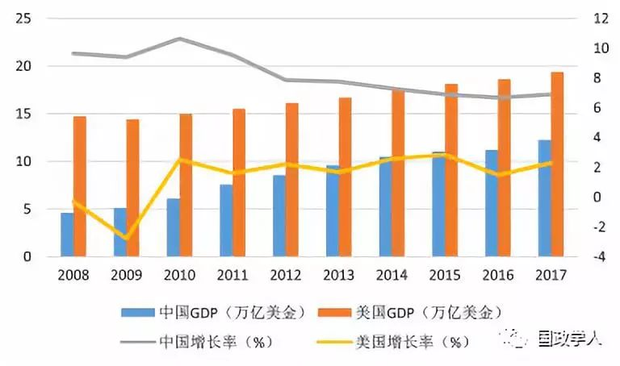
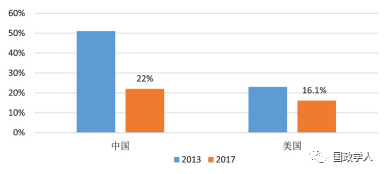
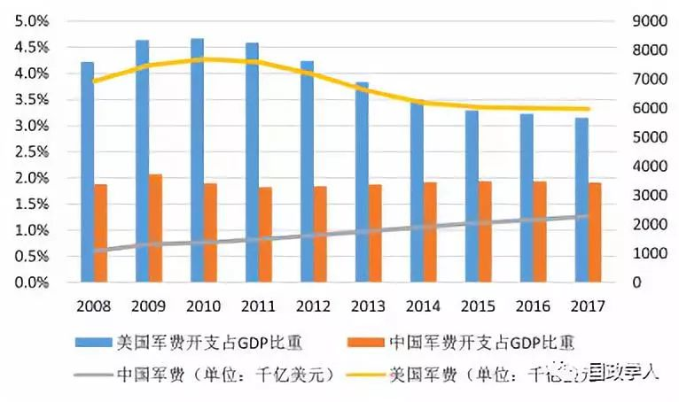
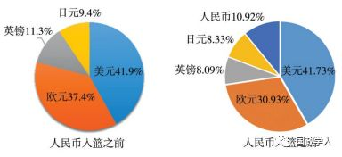

收录于合集

简 介
【 作者 】王文, 中国人民大学重阳金融研究院执行院长, 丝路学院副院长, 教授, 国务院参事室金融研究中心研究员; 刘典, 中国人民大学重阳金融研究院助理研究员。
【 编辑 】姚寰宇
【 校对 】王国欣
【 来源 】《东北亚论坛》2019年02期
摘要
2018年全球局势复杂多变, 单边主义、贸易保护主义抬头, 全球经济整体增速回落。而中美贸易冲突的发酵与演化, 进一步深化了世界政治经济形势的不确定性。中美两国实力的消长在过去的十年里一直受着全球舆论的关注, 但鲜有文献从细节角度看清中美实力差距的微妙性。本文以中美贸易摩擦为背景, 真实客观地比较中美实力变迁以及两者博弈的战略走向。本文认为, 中美贸易争端不仅仅是一场经济贸易领域的对抗, 更是涉及两国国家实力各方面的综合博弈。虽然中美两国元首达成共识暂缓征收关税, 但中美贸易争端仍具有长期性和严峻性。中国应做好充分的心理准备, 以战略耐力展开对美博弈, 打造全球创新引擎, 构建国际合作网络, 最终成功实现国家的伟大崛起。
关键词 ：中美博弈; 国际实力; 结构性转化; 中美贸易摩擦; 中国复兴; 美国衰落;

正文
2018年是国际金融危机爆发10周年, 世界政治经济格局不确定性明显上升, 全球局势复杂多变, 单边主义、贸易保护主义抬头, 经济全球化遭遇逆流, 世界经济发展蒙上阴影。全球经济整体增速回落, 世界GDP增长率按购买力平价 (PPP) 计算约为3.7%, 按市场汇率计算约为3.2%。除美国、印度等少数经济体之外, 全球几大主要经济体的增长呈现放缓趋势。国际直接投资活动低迷, 2017年全球外商直接投资 (FDI) 流入额为1.43万亿美元, 同比下降了23%。全球债务仍处于较高水平, 威胁着世界经济稳定。国际货币基金组织 (IMF) 2018年12月13日发布报告称, 2017年全球国家和私人债务总额达到创纪录的184万亿美元, 相当于全球GDP总量的225%。全球人均债务达8.6万美元, 相当于全球人均收入的2.5倍。国际贸易增速放缓, 2018年前三季度, 世界货物出口额同比增长率分别为14.3%、12.7%和8.4%, 排除价格因素后的实际世界货物出口总量同比增长率分别为3.7%、3.1%和2.7%, 比上年同期分别下降1.1、0.8和2.3个百分点。全球范围内经贸摩擦增多, 多边贸易体制受挫, 国际经济规则酝酿深刻调整。国际金融市场跌宕起伏, 截至2018年12月21日, 以摩根斯坦利资本国际公司编制的明晟指数 (MSCI指数) 来衡量, 全球股指从年初以来下跌13.3%, 其中新兴市场股市指数下跌17.4%。美股一度加速扩张, 但10月以来连续下挫。美联储连续四次加息, 美元走强, 名义美元指数同比升值7.0%, 实际美元指数升值6.5%, 全球资本向美国流动, 引发新兴经济体的货币贬值和流动性危机。
2019年, 全球经济增长预计持续弱化, 不确定因素进一步增强, 经济增速下行与分化风险加大。美国经济扩张进入晚期, GDP增速将回落。随着减税措施刺激效果的减退, 美国实体经济下行压力日益凸显。首先, 作为世界第一大经济体, 美国经济的下行将使得世界经济复苏面临较大不确定性。这种不确定性将会降低投资者的信心, 引发全球资本市场的波动。其次, 贸易保护主义对多边贸易体制构成了巨大威胁, 世界贸易将步入碎片化时代, 区域贸易协定发展进程加快。
中美贸易争端及美国与其他经济体之间的贸易摩擦打破了原有的国际贸易体系, 构建新的、更加公平合理的多边贸易规则的需求更为迫切, 国际贸易格局将面临重组和洗牌。再次, 美国股市泡沫破裂风险开始显现, 预计美国金融市场波动性将会显著上升, 并对全球金融市场产生溢出效应。同时, 全球债务水平的持续上升导致再一次爆发债务危机的可能性增大。全球金融风险处于上升状态, 累积的脆弱性或将因为金融环境收紧而暴露, 从而引发新一轮世界经济的衰退。
2008年爆发的国际金融危机对美国的经济增长产生了剧烈冲击, 全球经济陷入多年的萧条期。十年来, 以中国为主要代表的新兴经济体高速增长, 成为全球经济复苏的新引擎。2010年, 中国经济总量首次超过日本, 成为世界第二大经济体, 与美国经济实力之间的差距日益缩小, 两国的综合国力也呈现了差距缩小的总趋势。2013年以来, 中国提出“一带一路”倡议, 积极参与全球治理, 先后主办了APEC峰会 (北京) 、G20峰会 (杭州) 、“一带一路”国际合作高峰论坛 (北京) 、金砖国家领导人会晤 (厦门) 、中国共产党与世界政党高层对话会 (北京) 、上海合作组织领导人峰会 (青岛) 和中国国际进口博览会 (上海) 等重大主场外交活动, 在周边与全球的影响力急剧上升。针对中国迅速提升的影响力, 2017年初上台执政的美国总统特朗普, 提出“让美国再次伟大”的总目标, 在亚太地区的介入变得非常强势, 尤其是在经贸问题上采取贸易保护主义, 从而引发中美贸易争端。2018年的中美关系一度陷入中美1979年建交以来最复杂与最危险的境地, “中美将陷入修昔底德陷阱”的设想甚嚣尘上。
近年来, 学界有种观点赢得越来越多的呼声:即金融危机十年是美国衰落的十年, 逐渐恢复元气的美国再也无法容忍中国发展, 试图以遏制中国的方式来延缓美国衰落进程。 “ 中国复兴 , 美国衰落 ” 的假设是否成立 , 取决于如何更加全面客观准确地认识美国国家实力的变化 , 以及如何评估中国发展与中国在国际格局中的地位转变。 为此, 本文从关于美国衰落与中国复兴的流行论述出发, 梳理2008年国际金融危机爆发以来这十年中美国家实力的部分变化, 论述中美实力格局的微妙变化, 对“中国复兴, 美国衰落”的假设做出必要的修正, 并就中国未来发展战略提出一些设想与建议。
**“ ** ** ** **美国衰落 中国复兴？”
关于美国衰落的论调, 学术界有一些分歧。有学者认为, 美国国家实力只是处于暂时衰落中, 会经历周期性的反复, 不排除美国仍然会持续百年霸权。美国前总统奥巴马就曾说, “美国将继续领导世界一百年”。另一些学者则从软实力、相对实力、战略收缩论角度评估美国衰落。 软实力论者认为 , 美国硬实力的下降是 20 世纪末国际力量结构变化的重大现象 , 美国软实力是否能够保持其他国家不可企及的优势是美国霸权的关键。相对衰落论者认为 , 考察衰落一词要区分相对衰落和绝对衰落两个概念。相比于新兴经济体的快速崛起 , 美国呈现了 “ 相对衰落 ” 的趋势 , 而美国实力仍在不断增长 , 并不是处在绝对的衰落进程。战略收缩论者认为 , 美国的霸权只是收缩并非衰落 , 其基石依然牢固 , 将美国的战略收缩等同于衰退是不正确的 , 必须厘清战略收缩与衰退两个概念的不同。
与“美国衰落论”相对, “中国复兴说”更流行。中国的兴起具有巨大的世界意义, 背后也蕴藏着广泛而又深邃的理论逻辑, 国际社会对中国的适应进程仍在进行中, 随之所引发的各种看法、争议以及政策反应、战略调整, 让“美国衰落”和“中国复兴”的论调处在一个平台上而受到热议。在国际金融危机爆发的十年里,
中美国际权力再分配问题被屡屡提及, 仿佛这是一个零和博弈、我强你弱、结构性消减的国际秩序再造进程。
国际关系研究的主流观点认为, 国际关系的本质就是无政府状态, 即意味着世界上不存在一个高于主权国家之上的世界政府。 但无政府状态并不意味着国际关系就是完全混乱无序的状态 , 国际社会中仍然存在有序的行为状态。而这种有序性取决于实力第一国家的更替。不同的实力第一强国 , 将带来不同的国际秩序。国家实力作为一个国家的立身之本 , 其消长变迁极大地影响着国家间的权力分配、利益分配、观念分配 , 影响着国际格局的形势与国际秩序的构建。
中美两国学术界、智库界都在热议中美实力接近 , 纵观中美国家实力对比的现实争论 , 可以归纳为两类。
一类对 “ 中国复兴说 ” 持非常积极的态度 , 这类观点也有局部超越论和全面超越论的不同论调。 局部超越论认为随着中国实力迅速增长 , 中美在亚太地区的竞争日趋激烈 , 表现为无论是在经济领域还是在安全领域 , 两国间的制度融合较少 , 而另起炉灶、相互竞争的态势却日益明显。 其中代表人物马丁·雅克认为中国将于20世纪20年代中期取代美国成为全球第一大经济体, 并且随着中国持续崛起, 中国将不仅仅只是一个经济现象, 还会成为一个政治现象、文化现象、军事现象、道德观念现象、思维方式现象, 也就是说, 中国将越来越展现出一种有巨大影响力的全球性大国才会具有的特征。 全面超越论则认为中国和美国综合国力占世界比重的变化呈相反趋势 , 中国属于“持续发展型”, 美国属于“持续下降型”或“衰落型”, “中国综合实力已成为全球第一强国”, 中国有能力全面挑战美国, 中国领导人非常有底气地向美方提出, 建立新型大国关系, 并且随着时间的推移, 这种优势会越来越得以彰显。
另一类则持悲观态度 , 可进一步归纳为 “ 溢美论 ” 和 “ 唱衰中国论 ” 。 “溢美论”认为中国实力与美国仍有非常大的差距, 是个“脆弱的超级大国”，美国在各个领域相较于中国实力优势非常明显, 随着美国经济近两年的复苏态势, 中美两国之间的实力差距会越来越大, 而中国本身由于面临经济下行等多方面因素, 发展预期遭遇不确定性, 从长远来看, 无法超越美国。“唱衰中国论”则认为, 美国国内问题并未导致国家实力的绝对衰退, 只是由于他者崛起, 美国在国际权力格局中的优势地位受到了相对冲击, 但是中国在全球的发展是一个漫长的过程, 现在还远不能标志着美国世纪的结束。
随着中国经济实力与政治影响的不断提升, 西方对中国经济发展、外交感召、制度魅力等呈现“超越”的苗头感到压力, 恰逢此时, “中国全面超越美国”等极端论调进一步加剧了西方的恐慌感。美国对华态度正在进行建交40年来最颠覆的反思, 更有一些“中国威胁论”企图将中国定位为西方“假想敌”, 控诉中国窃取西方高科技与知识产权, 认为中国复兴是在搞“经济侵略”, 是在实施“地缘政治扩张”, 是在“破坏国际规则”, 甚至指责中国“对美国经济的长期健康和繁荣构成严峻威胁”。
关于“美国衰落”和“中国复兴”现实争论的背后事实, 是如何客观评估中美两国实力对比。中美两国的实力差距在缩小, 却很少有人去分层化、分领域地探讨两国实力到底有多接近?哪些领域的实力在接近?不同领域实力接近的差异是否存在?国际金融危机十年来, 对中美实力进行客观地对比, 对于校正“全面超越论”“唱衰中国论”等几类极端的论述显得非常重要。 本文将参考中外学者关于国际实力的评估模型， ****从硬实力和软实力两个大方面来进行分层对比。
十年来中美实力的分层对比
客观上看, 过去十年, 以经济总量为主要指标的中国硬实力已获得全面提升, 经济总量与美国的差距逐渐缩小。在经济实力上, 中国增长速度非常迅速, 占全球份额逐渐扩大, 并为世界经济的经济增长年均贡献30%左右。
从 GDP 规模的角度分析 , 中国占世界份额逐步扩大 , 同美国差距逐渐缩小。 根据世界银行 (World Bank) 数据统计, 2008年美国的GDP总量为14.719万亿美元, 中国的GDP总量为4.598万亿美元, 分别占世界GDP总量的23.2%和7.2% (见图1) 。2017年, 美国的GDP为19.391万亿美元, 而中国的GDP为12.238万亿美元, 两国GDP分别占世界总量的24%和15.2%。从这组数据可以看出, 美国GDP占世界份额并没有明显变化, 保持在世界经济总量的1/4左右;而中国占比却有了很大提升, 从2008年占美国GDP的1/3增长至约2/3。

图1 2008-2017年中美国民生产总值对比 资料来源:世界银行。
从经济增量的角度看 , 中国对全球经济增长的贡献率最大。 虽然近年来新兴国家的崛起导致中国对世界经济增长贡献率有所下降, 但中国对世界经济增长的贡献率仍为世界第一, 达到22%, 美国略低于中国为16.1%。不可否认, 中国是世界经济增长的主要力量。
从产业结构的角度来看 , 全球金融危机后的十年内 , 中国的农业增加值和工业增加值上也有迅速增长。 2008年, 中国的农业增加值为4713.57亿美元, 是美国的近3倍, 而2017年中国的农业增加值为9686.28亿元, 是美国的5.13倍。2008年, 中国的工业增加值为2.158万亿美元, 约为美国的2/3;而2016年中国的工业增加值为4.463万亿美元, 是美国的1.27倍。中国的工业增加值在2011年时就已超过了美国。

图2 中国和美国经济增量的世界占比 资料来源:Wind。
在金融发展方面 , 人民国际化水平也在逐步提高 , 与此同时美元作为国际储备货币的地位并未动摇。 根据国际货币基金组织 (IMF) 数据, 2016年10月1日, 人民币加入国际货币基金组织 (IMF) 特别提款权 (SDR) , 权重达到10.92%, 成为除美元、欧元、日元和英镑外的第五种货币, 其中美元在SDR有超过40%的权重。
从国际贸易角度看 , 中国货物出口额自 2013 年以来为世界第一 , 货物贸易为顺差状态 , 而服务贸易为逆差状态。 根据世界贸易组织 (WTO) 数据统计, 2017年中国的商品贸易出口额达2.26万亿美元, 进口额达1.84万亿美元；而美国商品贸易出口额达1.55万亿美元, 排名世界第二, 进口额达2.41万亿美元, 排名世界第一。中国的国际贸易依存度也在逐步提升。美国是中国最主要的贸易伙伴之一, 2017年中国和美国进出口贸易增速达到12%以上, 美国向中国提供了65.7%的贸易顺差。同时, 中国也是美国的第一大进口国, 2017年, 美国自中国进口总额占美国当年进口总额的21.6%。从进出口结构来看, 中国对外贸易规模的增长主要归功于进口项。2017年, 中国进口总额在世界占比为10.5%, 首次超过美国进口总额 (10.2%) 。
在国际规则方面 , 中国正在积极参与国际规则的制定。 中国由于历史原因在很多方面都处于不利地位, 其中有一条便是国际规则的制定。国际规则的参与其实是国家实力的一个重要的标志, 美国在很多国际规则的制定上占据主导权, 这与美国超级大国的地位是分不开的。而现在, 随着中国实力的增强, 中国充分利用各种资源和平台积极参与国际规则的重塑, 努力地参与到国际事务中, 中国对国际规则的制定的影响也越来越大。在国际气候公约中, 中国作为负责任的大国进行了谈判;在区域安全领域问题方面, 中国主导并成立了上海合作组织;在经济与发展领域, 中国创建了亚洲基础设施投资银行。此外, 中国参与创建了二十国集团、与东盟达成了自由贸易协定、在WTO改革中扮演着重要角色、促成并发展“一带一路”等。所以, 一方面要看到中国在国际话语权方面处于弱势和不利地位, 美国作为世界上最大的经济体拥有足够的表决权和话语权;另一方面, 也要看到, 美国并不是规则的唯一制定者, 而是受到其他国家的制约, 现在的世界不是“一强独霸”的状态, 美国曾试图领导在世界贸易组织框架内建立“21世纪高标准的贸易投资规则”, 以失败结束。足以证明, 世界体系正在朝着公正合理的方向发展。
随着互联网经济在中国普及, 中国移动支付规模得到迅速扩张。2017年中国第三方移动支付的规模已达202.93万亿人民币, 近五年平均增速高达181%。成年人电子支付比例高达76.9%。而在美国, 2016年移动支付规模仅有1.12千亿美元, 且增速缓慢, 手机支付比例仅为48%。同时, 随着“一带一路”建设的推进, 中国的移动支付技术也逐渐推广至其他国家, “技术出海”越来越普遍。短短两三年, 中国的移动支付技术已经惠及全球超过8.7亿人。 网络时代将给予中国金融对美国 “ 变道超车 ” 的巨大机会。
在科研投入上 , 中国保持着世界第二的位置 , 且研发投入额逐年稳步增长。 根据美国国家科学基金会 (National Science Foundation) 报告显示, 美国现在是全球研发投入最多的国家, 2015年美国的研发经费为4970亿美元, 占世界的26%, 占美国GDP的2.7%;2015年中国的研发经费为4090亿美元, 占世界的21%。并占中国GDP的2.1%。中国的研发经费增长迅速, 2000～2015年, 中国研发经费的年均增长率为18%, 重点在于研发而非基础研究;而美国同期的年均增长率仅为4%。[31]在高科技出口领域, 中国的高科技出口占制成品的百分比从2008年的25.57%变为2016年的25.24%;而美国则是由2008年的25.92%变为2016年的19.96%。
在软实力领域 , 中国也有了长足的进步 , “ 中国方案 ” 得到更广泛的认可。 和传统基于自由市场经济和民主政府的“华盛顿共识”相比, “北京共识”以其成功的市场经济模式受到了世界范围内越来越多国家的欢迎。
可见 , 虽然在印象中中国与美国综合实力仍存在着较大的差距 , 但这种差距并不是全面性的 , 中国在局部已呈渐进式缩小趋势甚至超越之势。这种逐步缩小甚至超越之势 , 让部分舆论开始变得骄躁 , 直至 2018 年中美贸易争端的爆发才变得更清醒。
2018年, 中美贸易摩擦在短时间持续升级, 深刻地反映了世界最大的两个经济体结构性的矛盾。此时, 应该更加审慎地分析两国实力对比, 仅仅片面鼓吹中国的崛起无益于中国经济的整体发展。尽管中国在诸多方面同美国的差距逐渐缩小 , 但不容忽视的事实是中国仍是世界上最大的发展中国家 , 而美国仍是世界最大的发达国家 , 美国领先于世界的地位并未被根本撼动。
从硬实力的角度来看 , 中国经济快速崛起 , 但美国整体上看仍是世界经济第一强国。 中国经济总量占全球市场的份额从2008年的7%左右, 上升到2017年的15%左右, 增长了8%左右, 实现了快速崛起。但中国经济的崛起, 并不意味着美国经济衰落。2008年到2017年, 美国GDP占全球份额一直稳定在1/4左右。从人均GDP的角度来看, 中美两国之间仍存在巨大差距。2017年, 中国的人均GDP为8827美元, 仅相当于美国的约15%。从经济产出效率的角度分析, 2014年中国全要素生产率 (PPP计价) 为美国的43%。虽然近年来, 中国经济正在从高速增长向着高质量转型, 但总体上中国的经济产出效率和美国相比仍有非常大的差距。2017年中国劳动生产率为1.3万美元, 美国为11万美元, 中国约为美国的12%。
从进出口结构来看 , 进口是中国对外贸易的主要增长项 , 出口则稍显薄弱。 中国出口总额的世界占比为9.8%, 美国则是12.9%, 因此两国出口总额占比还存在一定的差距。进出口涉及的对象主要为货物及服务, 中国的弱势则主要体现在服务贸易领域, 尤其是服务出口。中国的服务出口占比小于货物出口, 美国的服务出口占比要大于货物出口。2017年, 中国服务出口世界占比仅为3.8%, 大幅低于美国。从全球经贸交易的趋势来看, 目前国际贸易正逐步由货物贸易转向服务贸易。按增加值统计, 2017年, 全球服务贸易在总贸易中的占比超过40%, 全球贸易总出口中服务业增加值的占比为46%, 已经超过制造业 (43%) 。服务贸易很大层面上反映第三产业的发展程度, 而中国服务出口表现较弱则代表了中国在第三产业发展程度上与美国仍有一定的差距, 进行产业升级, 实现产业转型迫在眉睫。
在产业结构上 , 虽然中国在农业和工业的增加值上较美国有较大优势 , 但中国农业在效率和规模化程度较美国落后 , 中国的工业产能利用率整体落后于美国。 中国大豆和玉米的单产和总产量均低于美国;2016年中国的广义粮食自给率为84%, 低于美国的131%。在工业产能领域, 去产能政策的落实有效提升了中国的工业产能利用率, 2018年三季度全国工业产能利用率达到76.5%[38], 与美国78.4%仍存在一定差距[39] (2018年10月数据) 。此外, 中国的第三产业明显落后于美国, 高端服务业出口占比低于美国。且从劳动力分布来看, 2017年中国的第三产业就业人数占比为44.9%, 而美国为79.4%。
在城市化进程方面 , 中国的城市化率和美国相比有较大差距。 2017年, 中国的城市化率为58.5%, 低于美国的82.1%。此外, 中国城市群的集聚效应低于美国的三大主要城市群, 美国的三大主要城市群GDP占全国比重分别为25.6%、13.8%和14.1%, 而中国为10.1%、19.8%和9.8%。
虽然全球金融危机极大冲击了西方主导了数百年的国际经济体系 , 但十年来美国金融领域领先世界的地位并未被根本撼动。 中国以间接融资为主, 倾向于国企和传统低风险行业;而美国以直接投资为主, 有利于推动实体经济和科技产业的发展。从整体来看, 中国金融业的自由度偏低, 开放程度不足。根据美国传统基金会公布的2018年经济自由度指数, 中国的排名仅为第110名, 而美国为全球第18名。[40]
在资本市场上 , 从全球的股票市场规模来看 , 中国股市和债券市场均位列全球第三。 截至2018年11月26日, A股总市值为5.6万亿美元, 全球占比7.5%, 加上港股中概股与美股中概股后, 总市值为8.8万亿美元, 占全球股票总市值的11.8%。与美国股市40.1%的市场份额相比, 市场体量存在很大的扩张空间。就证券化率, 中国的证券融资程度只相当于发达国家在20世纪90年代的水平, 落后整整20年。截至2018年11月26日, 中国的证券化率仅为60% (仅考量在A股上市的企业) , 即使考虑海外中资股, 目前中国的证券化率也只有75%, 远低于美国 (147%) , 在五大经济体中排名居末位。 从全球的债券市场的发展现状来看 , 中国债券市场发展相对滞后于股票市场 。 截至2018年11月, 中国的债券市场规模为11.6万亿, 而同期美国拥有36.8万亿美元的债券余额。若以债券市场规模占GDP的比率作为衡量跨国债券市场活跃度的指标, 美国则是200%以上, 而中国的债券市场规模占GDP比例仅为100%左右, 这与中国的债市发展较晚, 债券市场流动性较低有关。由此可见, 中国的资本市场落后于美国, 对资金利用能力较差。
在跨境投资方面 , 中国对资本的吸引和运作能力与美国相去甚远。 在全球主要经济体中, 中国国际跨境投资明显处于弱势地位。从直接投资来看, 海外对中国的资本投入远低于美国。同时从FDI存量占比变动来看, 美国对全球资本的吸引力正逐步超过欧洲。从2012年至2017年, 美国FDI存量世界占比增加了7.6%, 而同期欧元区及英国则分别减少了4.2%和1.3%。而从对外直接投资来看, 2017年中国的存量规模只占全球的4.8%, 与美国相去甚远。跨境投资反映了在经济贸易中, 中国仍处于不利地位。
在军事实力上 , 中国被公认为世界三大军事强国之一 , 但中国的军费支出和美国却有很大的差距。 根据斯德哥尔摩国际和平研究所发布的《年鉴:军备、裁军和国际安全》, 2008年中国军费支出占GDP的百分比为1.88%, 美国为4.22%;2017年, 中国军费支出占GDP百分比为1.91%, 美国为3.15%。2017年, 美国的军费开支为6100亿美元, 约为第二位中国的3倍 (见图3)。

图3 2008～2017年中美军费变化及占GDP比重 资料来源:斯德哥尔摩国际和平研究所。
从软实力的角度看 , 虽然中国的话语权在增加 , 但是处于主导地位还是美国。 尽管国际秩序的转型和全球治理体系的变革为中国的话语权提升提供了契机, 但中国在全球治理话语权上存在话语权概念模糊、话语权长期缺失、发展道路理论支撑薄弱等问题。[45] (4-21) 长期以来, 国际社会的话语权都掌握在以美国为代表的西方发达国家手中。虽然随着中国经济的快速发展以及“一带一路”倡议的推广和落实, “中国方案”得到越来越多国家的认可, 但总体来看, 中国的软实力、话语权和美国相比仍有很大差距。 目前的国际协调机制仍由发达国家主导 , 包括中国在内的发展中国家都只是被动接受者。
中国并未获得与实力相匹配的份额 , 中国在世界银行拥有 4.45% 的投票权 , 在国际货币基金组织 (IMF) 拥有 6.09% 的投票权 , 话语权远远低于美国的 15.98% 和 16.52% 。 虽然从经济体量和贸易规模来看, 中国具有重要的国际影响力, 是带动经济增长和国际贸易的重要国家, 拥有与美国等发达国家相互抗衡的实力。 但是由于资本市场的开放度及人民币国际化程度较低 , 中国在国际金融市场和货币体系中的地位严重滞后于经济整体实力 , 从而导致中国在国际组织中的话语权相对弱化 , 以及对国际事务影响力不足。 由于美国利用IMF重大事项决策规则, 改革方案在历经六年才得到落实。
从货币国际化程度来看 , 美元作为国际储备货币 , 在全球外汇储备中占比超过 60%, 而人民币仅占 2% 左右。 在IMF特别提款权 (SDR) 权重中, 美元稳定在40%以上, 2016年底人民币正式“入篮”, 比重为10.92%, 仅为美国的四分之一左右 (见图4) 。

图4 人民币加入SDR前后比重变化资料 来源:IMF。
从国际货币体系角度分析 , 美元依然是国际货币体系的主要币种。 虽然中国在外汇储备总量上一直保持全球最高水平。2018年三季度, 中国外汇储备总额为3.09万亿美元, 占全球外汇储备总量的26.9%。但是, 从全球外汇储备的货币构成来看, 美元仍是最主要的国际储备货币, 截至2018年二季度, 美元在整体已分配外汇储备中占比为62.3%, 而人民币仅占1.84%。在外汇交易和国际支付方面, 美元在金融市场交易和国际支付清算仍中占绝对优势。美元是外汇市场中最活跃的币种, 2017年日均成交额占全球总额的87.6%, 在国际支付清算体系中, 美元和欧元共占70%以上的市场份额。而人民币在国际外汇市场交易中占比只有3.99% (2016年数据) , 在国际支付清算中的占比更低, 只有1.89% (2017年) 。在目前的国际货币体系中, 无论是金融交易市场, 还是支付清算体系, 美元的核心地位短期内难以撼动。2016年10月, 人民币正式加入SDR, 虽然五大货币中位居第三位, 但占比只有10.92%, 远低于于美元 (41.73%) 。
从企业竞争力的角度来看 , 美国和中国相比也更具优势。 根据2018《财富》世界企业五百强显示, 中国企业的数量继续增长, 共计120家, 仅比美国少6家。但进入世界500强的中国企业大部分都是国有企业, 且集中于垄断行业和金融部门。而且相较而言, 美国在健康科技领域上榜的企业数量更多。
从国家创新体系角度看 , 美国已经基本形成了较为全面的创新体系。 美国创新活动的主体涵盖范围较广, 企业、研究机构、大学以及各级政府等, 可以说在社会各界形成了创新意识。美国有上万家企业拥有研发实验室, 其中100家大型企业的研究工作量占整个产业界的绝大部分, 雇用约300万科技人员, 占全国就业科技人员的60%～70%。每年投入的科研资金占全国科研开支的70%左右, 科研项目较为集中。美国政府非常重视对高等教育等基础研究和实验发展领域的投入, 同时非常重视对新领域的探索和在现有科技领域里的继续创新和应用突破。美国政府推动的创新战略既强调应用, 也注重对产业的引导。在美国这个高度发达的市场经济体中, 各个领域都会有科研机构、企业和金融资本大量投入, 往往会在相关领域里形成系统性的领先成果, 通过中长期科技财政规划与创新战略、年度预算的有效衔接, 形成对研发领域的稳定支持, 从而确立在未来的优势。中国也制定了一些科技领域的发展战略, 比如《国家中长期科学和技术发展战略》《创新驱动发展战略》《中国制造2025》等, 中国对创新较为重视 , 但却并没有形成较为完整的创新体系 , 且在具体操作方面却并没有形成完整切实的方案。 在经费投入上缺乏系统、稳定支持, 科研经费预算主要侧重某个具体方面, 比如关键的技术性突破等, 并且多以专项的形式给予支持, 而美国更加注重对整个创新系统的建设和大领域的谋划。在创新领域, 中国与美国仍有一定的差距, 美国在科技创新支持落实方面比中国出色。
在遏制竞争对手方面 , 美国可以说处于领先地位。 美国作为超级大国, 其经济总量居于全球首位, 美元在国际货币中处于核心地位, 甚至伊朗、委内瑞拉这样反美的国家, 其出口石油换来的财富, 也多以美元的形式储藏在欧美等国的银行系统中。而且很多国际贸易规则都是由美国主导建立的。即使不能直接制裁, 美国也可以采取所谓的“次级制裁”, 即把制裁对象扩展到与被制裁对象相关的第三方, 比如美国若想制裁古巴、伊朗、利比亚, 可以通过向这三个国家某些领域进行投资的第三国公司实施制裁。此外, 美国常以威胁国际安全、违反武器控制活动、违反人权等理由发动战争, 例如伊拉克战争、阿富汗战争和科索沃等战争都是由美国主导的。可以说, 美国具有三样法宝:美元、美军和国际规则制定者。而这三个方面, 中国都无法与美国相比。
从金融信息服务角度来看 , 中国的金融信息服务产业起步晚、水平低、影响力弱 , 相关的基础设施不够完善。而美国金融信息服务产业发达 , 从金融信息评级机构的数量和质量上都占有优势地位。
在文化产业 , 美国的优势也十分明显。 美国的文化产业资金来源广, 科技转化率高, 文化输出的范围非常广, 有效推广美国的价值观。中国的文化产业起步晚, 产业发展尚不完备, 虽然近年来文化产品输出的规模扩大, 但总体来看影响力还十分有限。
综合硬实力和软实力两大部分, 可以看到, 尽管中国在经济上与美国的差距逐渐缩小, 但在诸多领域仍和美国存在着结构性的巨大差距。 中美贸易冲突不仅仅是一场经济贸易领域的对抗 , 更是涉及两国国家实力各方面的综合博弈。在这方面 , 中国要保持清醒。
** ** ** ** 国际实力消长下的中美战略转变********
新中国成立以来, 美国对中国采取多样式的战略, 不同时期, 对华战略方式也呈现不同的特征, 比如战略封锁、战略接触、战略合作、战略忽视、战略防范、战略遏制、甚至是战略对抗。
二战结束后初期, 在美苏冷战的国际背景下, 以美国为首的西方阵营封锁社会主义阵营的中国;20世纪60年代后, 中苏分歧增大、美苏冷战加剧, 尼克松总统开始寻求与中国接触。20世纪70年代, 中国先后恢复在联合国的合法席位, 对日本邦交正常化, 国际地位迅速提升。此时, 正值美国深陷越南战争泥潭, 苏联在中国东北边境陈兵百万, 中美基于国际局势一度实现战略合作, 共同应对苏联威胁。1978年中国改革开放, 1979年中美建交, 中美关系在20世纪80年代一度处在难得的“蜜月期”。
1991年, 苏联解体, 赢得冷战胜利的美国成为全球唯一超级大国。“历史终结论”的傲慢, 使美国目空一切, 在全球找不到势均力敌的战略对手。尽管在20世纪90年代初, 美国对中国的天安门政治风波处理方式, 采取短暂的经济制裁, 但从官方表述上看, 美国对华政策是相对模糊的, 甚至一度忽视了中国。而中国全力专注于国内经济改革发展, 推行市场化改革, 国内经济出现了长期两位数的年均增长。2001年“9·11”恐怖袭击后, 美国及其盟国将大量精力都放在了南亚和中东地区的反恐行动, 再次为中国创造了十年左右的发展机遇期。然而, 一部分美国人已开始认为, 由于中国拒绝民主化进程的社会主义意识形态和制度特点, 而且缺乏对美国所主导的国际军控与裁军制度的热情, 中国将是美国潜在的最重要的“敌人”。 事实上 , 过去十年 , 美国智库越来越认为 , 与西方或东方同样具有潜力的竞争者相比 , 中国是最具有挑战性的国家。
近年来 , 国际学术界判断 , 发展为全球第二大经济体的中国已对现存美国霸权秩序构成严重挑战。 出于对中国发展的恐惧和防范心态, 从2009年奥巴马上台执政开始, 美国重新调整其对华政策, 一方面在经济复苏方面求助于中国, 与中国合作, 在G20峰会的平台上对全球体系变革采取妥协的态度, 另一方面, 则针对中国相继提出“重返亚洲”及“亚太再平衡”战略, 决定将重心从反恐战争转为应对新兴大国的崛起。2017年后, 经济复苏后的特朗普政府正式把中国视为“战略竞争对手”。
外界逐渐发现, 随着经济的发展和综合国力的大幅度提升, 中国的外交政策似乎变得更加积极主动, 从“韬光养晦”、独善其身转向“主动有为”, 积极参与全球治理和国际秩序变革。2013年秋季, 习近平主席先后提出了“丝绸之路经济带”与“21世纪海上丝绸之路”倡议, 很快得到了超过100个国家与国际组织的积极响应。“人类命运共同体”与“新型国际关系”的倡议也多次写入联合国等国际重要组织的文件中, 得到广泛的认同。 很明显 , 面对国际主要行为体的力量与利益格局的变化 , 中国主动塑造一个以我为主、具有自我扩展和深化能力的国际合作秩序 , 为获得与中国实力增长相称的影响力 , 以及实现中华民族伟大复兴创造有利的外部战略环境。
2017年, 党的十九大报告明确提出了新时代中国特色社会主义发展的“两个阶段”战略安排 (即到2020年, 实现全面建成小康后) , 第一个阶段从2020年到2035年, 基本实现社会主义现代化;第二个阶段从2035年到2050年, 把中国建成富强、民主、文明、和谐、美丽的社会主义现代化强国。此外, 与国家实力增长相匹配, 中国提出“中国制造2025”计划、致力于打造一支高精尖军队。进入新时代, 中国主动有为、积极进取的战略布局明晰可见。
中国迅速发展引发的中美利益关系变化 , 正好符合美国的战略重点转向巩固和加强在东亚军事同盟体系和地区霸权的战略需求。 在这个逻辑层面上看, ****中美两国的互动关系开始逐渐从注重追求相对经济收益的 “ 正和博弈 ”, 向以权力竞争和国际影响力竞争为目标的 “ 零和博弈 ” 的方向转变。 在不同的领域和不同的议题上, 中美目前仍处于“零和博弈”和“正和博弈”共存的状态, 但在特朗普对华攻势下, 零和博弈似乎有着进一步上升之势。
冷战结束后, 美国积极制定新的全球战略, 塑造全球新秩序, 试图长期维持与巩固美国在单极世界的国家利益和霸权地位。另一方面, 美国开始寻找新的“敌人”,试图通过确定了防范和遏制对象, 来强化国内的政治团结。国际金融危机十年后, 中国实力陡增, 正好符合美国寻找最有潜力的“敌人”的战略需要。自1993年克林顿政府以来, 美国东亚战略的核心——即为防止出现一个如苏联那样的和美国具有同等竞争力的军事力量、能与美国在同一层次上较量的“同辈竞争者”——终于在中国身上找到了发力点。
** ** ** ** 中美未来博弈的新思考********
2019年, 中美两国建交四十周年, 全球金融危机度过了整整十年, 中美两国之间的战略互动态势已经发生了重大的结构性变化。
从战略层面看, 在全球金融危机后, 美国战略界对中国的焦虑感明显上升, 逐渐达成加强对华防范的共识, 并通过推进“亚太再平衡”战略付诸实践。根据2017年底以来的《美国国防战略报告》等多份战略文件, 美国已明确将中国定义为“战略性竞争对手”。很明显, 特朗普执政期间, 美国对华战略的决策逻辑, 对内更多同国内政治逻辑关联, 对外则以地缘政治思维为基础, 一内一外的两点战略方式正逐渐成为华盛顿精英对华的主流认识。罗伯特·霍马茨表示, 美国担心的不是当下, 而是将来。 美国认为 , 中国已经发展成了具有强劲竞争力的经济体 , 且在高新技术领域竞争力表现突出 , 对美国造成一定的震惊。反观中国 , 中国对美国的互动地位在整体态势上已经从防御转变为对等。
由于中美关系的复杂性和竞争性, 中美关系将经历一段比较困难的时期。美国对中国目前“复兴”的程度和影响的评估和反应, 已从防御和战略层面发展至更为实质性的领域。中美双方在全球和地区事务上的争执点很可能进一步增多。而且围绕如台湾问题、朝核问题、南海问题、技术转让问题、贸易摩擦问题等的争端和摩擦有愈演愈烈之势。中国不得不保持高度的谨慎。
同时 , 中国必须认识到中美两国之间只有加强合作 , 继续努力构造新型的中 美大国关系 , 才能解决当前世界面临的问题。 两国曾携手应对了2008年的金融危机, 现在两国有着更大的合作空间, 可以共同努力抵御世界陷入新一轮金融危机。
此前, 在中美两国战略互动的过程中, 两国之间缺乏有效的对话。中美贸易摩擦爆发, 中美两国并未进行有效的沟通。在宏观层面与微观层面, 中美制度与规则不可能完全一致, 双方在经贸领域存在一些分歧是完全正常的, 关键是要本着相互尊重、平等互利的精神妥善管控, 坚持求同存异, 就如何处理分歧达成一定程度共识, 找到双方都能接受的解决办法。12月1日, 在G20阿根廷峰会上, 中美双方就当前阶段中美关系及中美贸易问题交换看法, 两国元首达成共识, 停止加征新的关税, 并指示两国经济团队加紧磋商, 朝着取消所有加征关税的方向, 达成互利双赢的具体协议。这次谈判, 中美两国给予了双方一定的尊重, 就分歧点开展一定的对话, 这是实现合作共赢、符合国内市场需要的。
虽然中美贸易冲突有了缓和的迹象, 但是中美之间的分歧与对立仍具有长期性和严峻性。 在此背景下 , 中国需要认清中美在经贸领域博弈的本质 , 积极推动技术创新与产业升级、打造新型世界经济合作网络。
第一 , 做好持久应对的思想准备 , 以政策耐力、政策定力应对美国攻势。
中美贸易冲突的爆发并非偶然, 也并非美国特朗普政府的短期策略, 中美经贸领域的结构性矛盾是长期存在的。随着中国经济的快速增长, 守成大国美国感受到了来自新兴大国的崛起压力, 认为中国破坏了既有的国际利益分配格局。中美经贸问题的复杂性与长期性意味着中美贸易冲突不可能在短时间内结束, 中国对此要保持战略警惕与战术耐力并行。
中国和美国的文化背景和政治背景有着极大的不同, 导致两国在外交方面采取不同的外交政策, 中国在两个大国之间的博弈要认清美国的对外策略。美国的文化环境和政党制度使得美国需要在短期内见到成效。美国在国际社会中善于主动出击以获取优势地位, 美国对朝鲜、越南、南斯拉夫、苏联、伊拉克、阿富汗等多个历史案例表明, 在硬碰硬地短期“对撞”中, 美国对外战略往往会表现得越战越勇, 取得战略胜利的概率很高。尤其在特朗普执政下, 美国的战略劣势在于不惜损耗美国战略资源, 挥霍美国信誉储备来获得美国的短期优势, 并为了尽快取得成效, 甚至采取较为强硬的手段来“遏制”中国。但在持久的战略博弈中, 美国往往会由于国内各类重要选举、社会舆论的干扰等诸多因素而出现战略失误或周期性的政策调整。而中国自古以来就坚持以和为贵,当代中国奉行独立自主的和平外交政策。在维护本国利益的前提下, 中国在尽可能以和平合作的方式化解美国的“强势进攻”。 外交策略的不同使得中美之间关系存在很多不确定性 , 中国要做好 “ 持久战 ” 的心理准备 , 对美展开全方位的博弈 , 既要守住底线 , 也要保持竞争与合作的态势。
从外部环境看, 中国的政策耐力在于, 须长期保持对竞争对手与他国的谦虚学习心态, 以及对后进国家给予帮扶支持的做法。 事实上 , 四十年来中国对美保持一以贯之的战略定力与常性 , 恰恰是在每一轮残酷的中美博弈中化险为夷的根本原因。
针对美国不同的手段, 中国应具有相应的措施, 以政策耐力、政策定力应对美国进攻。中国的整个政策方向以及经济走向是有着明确规划和方向的: 中国应继续坚持改革开放政策 , 中国改革开放的成就不是中美贸易摩擦就可以否定的。中国的强大引起美国的恐惧 , 中国只有通过各种途径增强自身的实力才是最大的保障。经济基础决定上层建筑 , 中国自身经济实力强大 , 在中美关系中的话语 权才会更大。
第二 , 积极落实 “ 创新驱动 ” 发展战略 , 打造世界经济的创新引擎。
中美贸易冲突对中国产生的负面冲击, 同样暴露了在全球价值产业链中, 中国仍处于不利地位。美国对中国的制裁从高新技术产业开始, 利用技术优势影响中国经济。中国只有改变技术落后状态, 通过创新研发实现产业升级, 才能改变中国的被动局面, 重塑中国在全球产业链中的位置。而这将是一个持久的过程。所以, ****虽然当前逆全球化暗潮汹涌 , 中国仍需要加强国际交流和合作 , 一方面引进先进的技术和设备, 另一方面加快创新驱动战略的实施, 实现产业转型升级。
中国需要对内提升治理能力并实现治理体系现代化 , 深化与落实国内新一轮改革开放的各项政策 , 按“两个百年”与2035年、2050年“两步走”的战略步骤大胆向前。在这个进程中, 落实相关战略部署与政策, 推动技术创新与产业升级, 尤其重要。互联网等一系列新技术的应用普及, 为世界经济提供了新的生产技术、商业模式与消费业态。 中国作为新兴经济体 , 拥有雄厚的人口优势、后发优势以及创新优势 , 实现经济的飞跃式与高质量发展势在必行。
中国应该积极落实 “ 创新驱动 ” 发展战略 , 创新是引领发展的第一动力 , 是建设现代化经济体系的战略支撑。 利用大数据、云计算等新兴技术为中国的经济发展增添新动力, 以科技作为经济发展的重要依靠, 以创新为经济发展注入源泉。中国的创新发展将极大程度为全球性创新发展的落实和推进提供宝贵的经验。中国在全球范围内努力践行亲、诚、惠、容的理念, 并通过“一带一路”等政策实现国家之间的交流与合作, 带动了沿岸很多国家的发展。中国是世界经济的重要一环。中国创新, 中国发展, 也会成为世界经济和平发展的重要力量。 同时 , 中国加大对技术创新的投入也将有利于中国进一步融入全球价值链中 , 推动全球经济体系向更加公正合理的方向发展。 为应对中国复兴, 许多欧美国家的内部势力正在呼吁要团结起来, 在敏感问题上向中国施压。 全球经济体系越合理 , 欧美国家围堵中国的可能性就越低 , 美国希望与中国新冷战的国际体制就无法形成 , 而中国在全球的领衔号召力就会更大。
第三 , 组搭建新型国际合作网络 , 国际广泛交友 , 推动全球体系的公正合理化。
从全球互动的角度来看, 中国相较美国的国际形象已有很大改善, 在全球层面上的朋友越来越多, 不再是过去的战略寡助。中国主张不结盟, 但结伴而行者众;美国盟友看似多, 但盟友体系日益松散, 敌人却在无形增加。特朗普担任美国总统以来, 美国已成为国际体系中最大的不稳定因素。退出巴黎气候变化协定、退出联合国教科文组织、甚至威胁退出中导条约、世界贸易组织等行为, 让人怀疑美国是否能继续承担世界大国责任。以美国为主导、二战结束以来一直维系着国际体系面临着崩溃的危险。
中国的外交理念、外交政策是有目共睹的, 中国应继续已有的坚持外交宗旨 , 积极发展全球伙伴关系。 广大发展中国家处于上升期, 是世界秩序重建中的重要力量, 中国应加强与发展中国家的团结合作。 全方位、宽领域、多层次的对外交往格局对中国非常重要 , 应扩大同各国的利益交汇点 , 搭建新型的国际合作网络。
在全球化时代, 中美之间的博弈也需要同其他传统强国和次区域强国处理好外交关系。目前, 中国的“一带一路”建设让广大发展中国家看到了以发展为导向“中国方案”的优势。中国可以利用国际多边合作机制, 带动广大发展中国家进入全球价值链, 这将很大程度上有助于促进世界经济的再平衡。改革开放四十年, 中国与发达国家之间形成了以产业分工、贸易、投资和间接资本流动为载体的全面经贸关系, 与发展中国家形成了以贸易和直接投资为载体的全面循环体系。 在这样的背景下 , 中国的发展为全球经济的增长提供了新的机遇。中国应该更加积极地在世界经济中发挥作用 , 努力搭建新型世界经济合作网络。
结 论
当下的世界, 各国之间不是孤立的, 也不是统治与被统治的关系。随着全球化的进一步深入, 国家之间的经贸合作、社会交往、文化交流都达到了前所未有的紧密程度。但与此同时, 反全球化的浪潮也在逐渐兴起。在中美贸易冲突的背景下, ****中国更应坚定全球化与贸易自由化的道路 , 推动全球治理体系朝着更加开放、包容的方向发展。
改革开放四十年来, 中美之间的战略互动态势已发生了重大的结构性变化。美国将中国定位为“战略性竞争对手”, 这也意味着美国真正开始重视中国。 在这种重视中 , 保持国力的稳步增长 , 是防范美国攻势的关键。 中国对美的战略互动地位正在逐渐转变成对等方、互动方、主动施力方, 而不再是次要方、附属方、被动回应方, 从战略防御变为战略对等的进程充满着惊险, 却正在演绎着史诗般的大国故事。
国际金融危机后的十年, 中国综合国力全面提高, 和美国的差距逐渐缩小, 国内外环境局面均好于预期。对此, 中国国力的进一步增长已经进入了“精耕细作期”, 正在向高质量增长转换, 中国在“西颓东盛”与“智能革命”大趋势下切忌骄傲自满。 从过去的重视 “ 量 ” 上的增长要转型升级到 “ 量质并重 ” 的高质量崛起进程中 , 保持谦虚谨慎 , 以坦诚求真之态剖析中外优劣势 , 知己知彼 , 查漏补缺 , 兴利除弊变得越来越重要。
当前的国际权力格局已经发生了深刻的转变, 中美两国之间的一系列摩擦逐渐升级。在这样的背景下, 中国更应对美国保持强大的战略定力。 中国只有充分认识到中美贸易争端的长期性 , 坚持深化改革开放 , 推动技术创新 , 积极参与经济全球化 , 才能更加平稳地崛起 , 打造互利共赢的人类命运共同体。
更多阅读
【国关理论】兰德尔·施韦勒：新古典现实主义与中美关系的未来 | 国政学人
【安全研究】胡高辰、李彬：稳定—不稳定悖论的批判与美国的安全研究范式分析
国政学人 （ID：guozhengxueren)
为方便学人及时阅读高质量文章
别忘把国政学人设置 星标 哦~